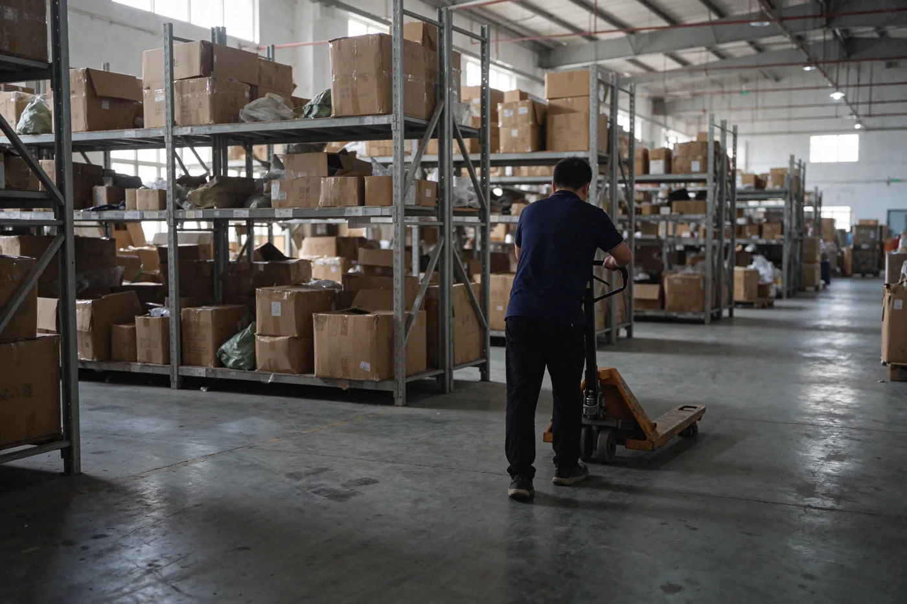

Работаем в Китае и России — от закупки до поставки.
China Sells специализируется на поставках из Китая: локальные ресурсы, устойчивый отбор поставщиков и опыт полного цикла помогают клиентам быстрее закрывать закупки и выводить товар на рынок.

Наньтун · Цзянсу+ 3000 м²собственные складские площади в России
От опыта в домашнем текстиле — к полному циклу трансграничных поставок
China Sells — компания, специализирующаяся на торговле с Китаем, с офисами в Китае и России. Мы обеспечиваем постоянную поддержку на всех этапах: закупки, переговоры, производство, инспекция, документы, логистика и складирование.
Команда имеет 10-летний опыт в отрасли домашнего текстиля и расширила ассортимент до тканей, электроники и оборудования — помогаем находить надёжных производителей с подходящей ценой, сроками и качеством.
Работаем по контрактам с российскими компаниями, предоставляем полные данные и юридический адрес, поддерживаем расчёты в рублях — это снижает барьеры коммуникации и платежей.
Наши продукты и услуги
От первого запроса до товара на складе в России — один ответственный контур вместо десятка подрядчиков.
Закупки и развитие поставщиков
По запросу клиента находим в Китае надёжных производителей, сравниваем цены, условия, сроки и базу качества, формируем исполнимый план закупки.
Переговоры и работа с контрактом
Представляем интересы клиента в переговорах с фабрикой: цена, сроки, качество, детали договора и дальнейшее производственное взаимодействие — без языковых и региональных издержек.
Инспекция фабрик и товаров
Перед отгрузкой проводим выездную инспекцию фабрики и товара, предоставляем фото, видео или прямую трансляцию реального производства.
Сертификация, таможня и логистика
Помогаем с договорами, сертификатами соответствия и таможенными документами; организуем перевозку, оформление, сертификацию и доставку по всей России.
Локальный склад и онлайн-каналы
Собственный склад в России позволяет хранить товар клиента; мы уже ведём локальный онлайн-магазин и готовим магазин прямой закупки.
Прозрачный процесс, ключевые этапы под контролем
На каждом этапе понятно, что происходит, кто отвечает и какой следующий шаг. Без «мы работаем» без статуса и сроков.
Обсудить задачу →Запрос и требования
Вы описываете товар, объём, сроки и бюджет — мы уточняем требования и фиксируем критерии приёмки.
Подбор фабрик и расчёт
Отбираем производителей, сравниваем цены, сроки и качество, присылаем смету с разбивкой по статьям.
Образец и согласование
Изготавливаем и отправляем образец, согласуем материал, цвет, упаковку и маркировку до старта партии.
Инспекция фабрики и партии
Проверяем производство и готовую партию: фото, видео-отчёт или онлайн-трансляция с фабрики.
Контракт и контроль производства
Заключаем договор и контролируем график производства, качество и статус готовности партии.
Логистика, таможня и доставка
Оформляем документы и сертификаты, доставляем на ваш склад или размещаем на нашем складе в России.
Мы решаем реальные задачи трансграничной торговли
Не продаём «логистику» и «закупки» по отдельности — закрываем те узкие места, где сделки чаще всего ломаются.
Сомнения в выборе фабрики
Выездная проверка, сравнение поставщиков и подтверждение образцов дают клиенту прямую картину реального производства.
Языковой барьер с Китаем
Берём на себя переговоры, согласование условий, контроль производства и решение спорных ситуаций, помогая получить более выгодные условия.
Непонятная сертификация
Помогаем с договорами, сертификатами соответствия и таможенными документами, снижая неопределённость исполнения.
Сложная международная логистика
Ведём всю цепочку от фабрики до склада в России и дальнейшей доставки — меньше контрагентов и издержек на координацию.
Нужны расчёты в рублях
Работаем по контрактам с российскими компаниями и поддерживаем расчёты в рублях — ближе к привычной практике местного бизнеса.
Нет локального склада
Собственный склад в России поддерживает хранение, перераспределение и дальнейшее исполнение заказов, создавая инфраструктуру для долгосрочной торговли.
Новая торговля — на доверии
Сложность кросс-бордера не в поиске товара, а в доверии между сторонами. Мы открыто показываем стоимость, процесс и результат каждой сделки.
Прозрачная смета
Закупка, логистика, таможня и хранение — отдельными строками. Без скрытых наценок и «сюрпризов» в счёте.
Проверяемый процесс
Образцы, инспекции и погрузка фиксируются фото и видео — любой этап можно перепроверить и подтвердить.
Долгосрочный подход
Работаем на повторные поставки, а не на одну сделку. Готовы вкладываться в долгое партнёрство.
Частые вопросы
Какой минимальный объём заказа (MOQ)?
Конкретный MOQ зависит от типа продукции и требований поставщика. Свяжитесь с нами для подробной информации — подберём фабрику и объём под ваш продукт.
Каковы сроки поставки?
Сроки зависят от типа продукции, объёма и расстояния; обычно это 2–8 недель. Точный график фиксируем до старта производства.
Что делать при проблемах с качеством?
Мы проводим строгую инспекцию перед отгрузкой; при обнаружении проблем помогаем согласовать решение с фабрикой — от замены партии до корректировки процесса.
Какие способы оплаты?
Работаем по контрактам с российскими компаниями и поддерживаем расчёты в рублях. Условия обсуждаются под конкретный заказ и формат сотрудничества.
Работаете ли с малым бизнесом и стартапами?
Да, мы открыты для клиентов любого масштаба и подбираем решение под продукт, бюджет и этап заказа.
Готовы начать сотрудничество?
Отправьте запрос на закупку или материалы о продукции — поможем оценить дальнейшие шаги.